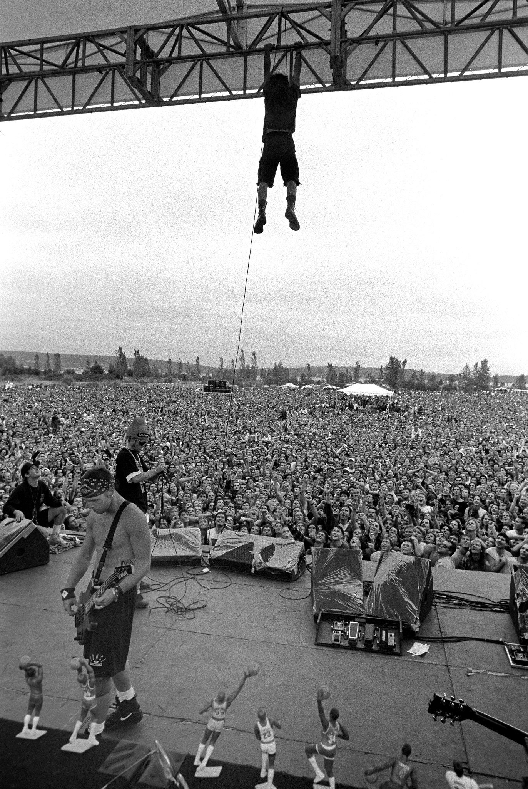

Estructura de posicionamiento absoluto pero adaptable a la resolució de pantalla.
Contenedor Interno 1.
Texto Texto Texto Texto Texto Texto Texto Texto Texto Texto Texto
Contendor Interno 2.

Contenedor Interno 3
Texto Texto Texto Texto Texto Texto Texto Texto Texto Texto Texto